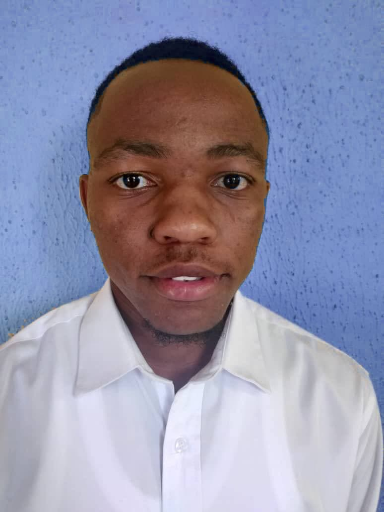
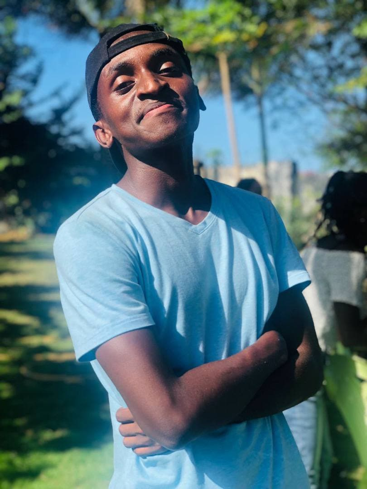

last four years. Before, Mr. George served
as the school Discipline Master, before he was elevated to position of Senior Academic Master.
 MR.EMMANUEL MATHAYO
MR.EMMANUEL MATHAYOHe is the assisant Dean, operating as the second headmaster.He also teaches physics and Chemistry in form 3 and 4.
 JOSEPH SODIC
He is the desicipline master of Rosimini secondary school.He also is the head of the biology department.
OTHER STAFF MEMBERS
